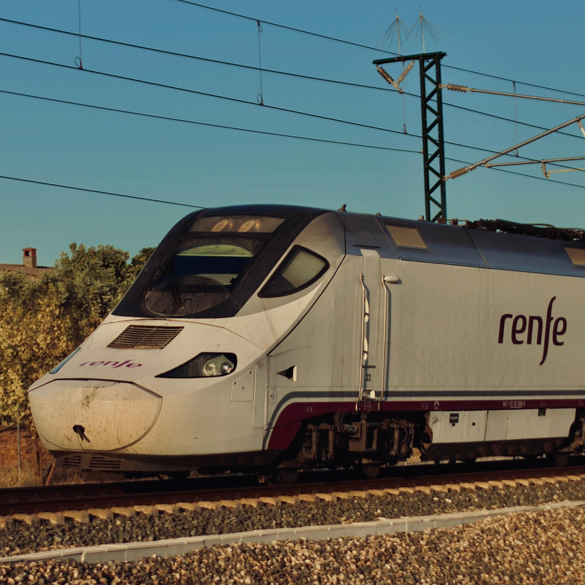

Matías Arévalo

Matías Arévalo es un apasionado del ferrocarril con más de 20 años de experiencia en el sector. Desde su juventud, ha estado involucrado en la comunidad ferroviaria, colaborando en diversos proyectos y publicaciones.
Contacto
Correo electrónico: autor@treneros.es